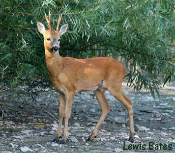
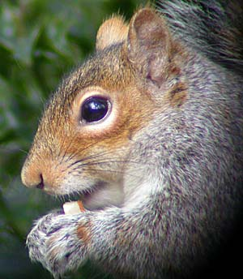

|  |  |
| Home | Recent | Species | Birds | Fish | Mammals | Insects | Fungi | Snaps | Wallpaper | Links | Contact |
Mammals
|
Roe Deer may be encountered almost anywhere, but have a great knack of remaining inconspicuous and are best seen early morning. Foxes are regularly seen, often sunning themselves on the west bank. |
 |

 |
Rabbits are in the woods and the meadows. Grey Squirrels are common, especially at the entrance
to the woodland on the path to the bird hide. 1 Dormouse found 4th Nov 2011. Badgers: A pair were caught on camera in the snow of February 2019 |
 Bank Vole April 2012 |
 Rats are sometimes seen by the Duck feeding area. |
Bats at the Res
Common Pipistrelles, Soprano Pipistrelles, Daubenton's, Noctules and Serotines
have all beeen recorded.
A Soprano Pipistrelle (small bat) interrupted by a Serotine (large bat) over the reeds at the south end (audio recording September 2017).
If anyone has information or observations on the mammals at Chard reservoir:
email me: kevbirder@gmail.com